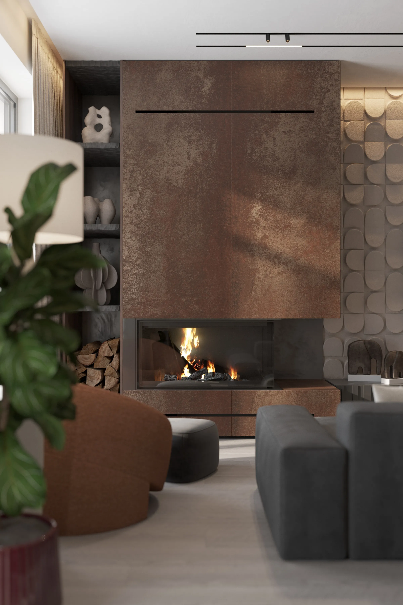

SPACES THAT SPEAK THE LANGUAGE OF THEIR OWNERS SCULPTED IN STONE, GLASS, AND LIGHT
(ARCHITECTURE / FORM)

Our work always begins with context - the landscape, the specific quality of light, the discipline of proportion. We study the site until the architecture starts to feel like a natural extension of it, rather than an interruption. Every volume and line is shaped to strike a balance between structural clarity and raw emotion, creating spaces that feel inevitable, not imposed. It is less about making a statement and more about how a building handles the sun throughout the day or frames a view. In the end, we aim for a form that simply belongs to its site - one that doesn't shout, but quietly defines its surroundings.
(INTERIORS / ATMOSPHERE)

Inside, we build rhythm and calm. Material transitions, shadows, and texture define the atmosphere more than decoration ever could. We treat interiors as emotional geometry — spaces that unfold through light and silence, inviting everyday rituals to feel meaningful.